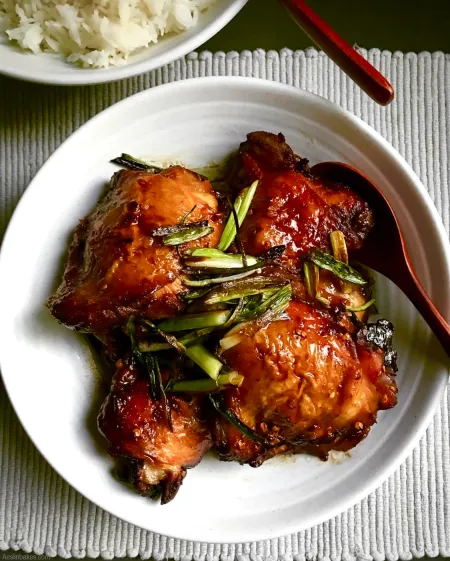

Adobong Manok

Description
Chicken Adobo is an authentic Filipino dish and is one of the mostly
recognized Filipino foods. Not to be mistaken with Mexican adobo, this
dish is uniquely prepared by stewing chicken in vinegar and soy sauce.
Several sources who are experts in Asian food history say that the
Filipinos were already cooking adobo even before Spanish colonization.
According to them, cooking with vinegar preserves the meat. This method is
also considered as one of the earliest food preservation practice.
Ingredients
- 2 lbs chicken
- 3 pieces dried bay leaves
- 4 tablespoons soy sauce
- 6 tablespoons white vinegar
- 5 cloves garlic
- 1 1/2 cups water
- 3 tablespoons cooking oil
- 1 teaspoon sugar
- 1/4 teaspoon salt
- 1 teaspoon whole peppercorn
Steps
-
Combine chicken, soy sauce, and garlic in a large bowl. Mix well.
Marinate the chicken for at least 1 hour.
- Heat a cooking pot. Pour cooking oil. 3 tablespoons cooking oil
-
When the oil is hot enough, pan-fry the marinated chicken for 2 minutes
per side.
-
Add dried bay leaves and whole peppercorn. Simmer for 30 minutes or
until the chicken gets tender 3 pieces dried bay leaves, 1 teaspoon
whole peppercorn
-
Add vinegar. Stir and cook for 10 minutes. 6 tablespoons white vinegar
-
Put-in the sugar, and salt. Stir and turn the heat off.Serve hot. Share
and Enjoy! 1 teaspoon sugar, 1/4 teaspoon salt